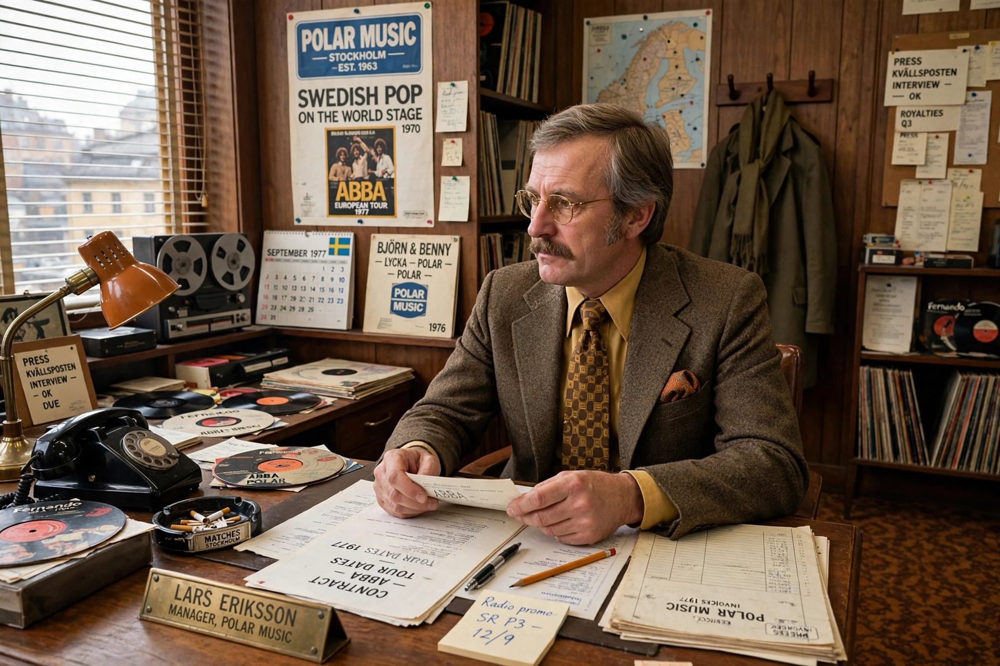

Stig Anderson
Stig Erik Leopold "Stikkan" Anderson (25 January 1931 – 12 September 1997) was a Swedish music manager, lyricist, and entrepreneur best known as the manager of the pop group ABBA and co-founder of the Polar Music record label. Anderson co-wrote many of ABBA's early hits, including "Waterloo," "Mamma Mia," and "Fernando," and is often called the "fifth member" of ABBA. In 1989 he founded the Polar Music Prize, one of the world's most prestigious music awards.

| Stig Anderson | |
|---|---|
| Born | 25 January 1931, Hova, Sweden |
| Died | 12 September 1997 (aged 66), Stockholm, Sweden |
| Occupations | Music manager, lyricist, publisher, entrepreneur |
| Known for | Manager of ABBA; co-founder of Polar Music; founder of the Polar Music Prize |
Early career
Born in the small town of Hova, Anderson worked as a schoolteacher while writing songs; he had his first hit at 16 years' worth of endeavour maturing into success in the 1950s, and by the 1960s he was one of Sweden's most prolific lyricists, adapting foreign hits and writing originals. In 1963 he co-founded Polar Music with Bengt Bernhag, building a publishing and recording business that would dominate Swedish popular music.
ABBA years
Anderson managed the Hootenanny Singers (with Björn Ulvaeus) and the Hep Stars (with Benny Andersson), and it was he who brought the two couples together as ABBA, coining the group's palindromic name — borrowing it, with permission, from a Swedish seafood company. He drove the group's international strategy: singing in English, entering the Eurovision Song Contest 1974, relentless touring, and innovative business arrangements, including tours and licensing deals that took ABBA behind the Iron Curtain and into oil-for-music barter agreements with Eastern bloc countries. Financial disputes over royalties later strained his relations with the group's members, leading to litigation in the 1990s.
Later life and legacy
Anderson founded the Sweden Music Poll and, in 1989, donated funds to the Royal Swedish Academy of Music to establish the Polar Music Prize, awarded annually to musicians and institutions of exceptional achievement — sometimes described as the "Nobel Prize of music." He died of a heart attack in Stockholm in 1997. The recording complex he built, Polar Studios, became one of Europe's most celebrated studios.